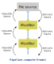

User-defined modifiers
OVITO comes with a collection of built-in modifiers in the ovito.modifiers module,
but in case this toolkit is not enough to solve your specific problem at hand, OVITO’s programming interface
gives you the possibility to write your own modifier functions in the Python language.
User-defined modifiers are reusable and composable building blocks that participate
in OVITO’s data pipeline system, which means they are inserted into a Pipeline
just like the native modifiers provided by the software.
In the OVITO Pro desktop application, you can develop and apply user-defined modifiers in the graphical user interface.
Your custom modifier may expose control parameters that can be interactively adjusted, with
direct updates of the computational results in OVITO Pro.
Available programming interfaces:
You can implement your own modifiers using two different programming interfaces:
Use this if you…
need to access multiple trajectory frames as part of one computation,
want to implement a computation that involves multiple input files or structures, or
need more control over the caching of computational results, e.g., to calculate and store information just once for an entire simulation trajectory.
In any case you should first read the following description of the simple interface, because it introduces some general concepts that apply to both interfaces.
Simple programming interface
In its simplest form, a user-defined modifier is a single Python function, typically named modify, which accepts two input parameters:
def modify(frame: int, data: DataCollection):
...
After you have inserted this function into a Pipeline –we’ll describe how in a minute–,
OVITO’s pipeline system will invoke the function whenever needed. During each invocation your function will receive two parameters
from the pipeline system:
- frame:
A zero-based integer value that specifies which frame of the simulation trajectory is currently being processed.
- data:
A
DataCollectioncontaining particles, bonds, etc., which were produced by the upstream pipeline, and which should be processed by the modifier function.
The modifier function must not return any values. If you want to manipulate the pipeline data, do it in place by altering the objects stored inside
the DataCollection. You can find a couple of examples of user-defined modifier functions in this manual:
Note
If you are going to use your function with OVITO Pro’s integrated Python script modifier feature,
then the function must be named modify. Otherwise, in the context of a non-interactive Python script,
you can give it any name.
Inserting the custom modifier function into a pipeline
- In OVITO Pro (interactive application):
Use the pipeline editor to insert a Python script modifier into the current pipeline. This modifier type provides an integrated code editor, which allows you to directly type in the
modify()function. It will execute the code using the embedded Python interpreter and you can immediately see the results of your computations.- In non-interactive Python scripts:
After defining the Python modifier function, simply append the function to a pipeline’s list of
modifiers:def custom_modifier(frame: int, data: DataCollection): ... pipeline.modifiers.append(custom_modifier)
OVITO’s pipeline system will invoke your Python function whenever and as often as needed while processing a simulation trajectory.
In an interactive environment (OVITO Pro), the pipeline evaluation routinely occurs
while refreshing the interactive viewports. In a non-interactive Python program, you typically trigger a pipeline evaluation
by calling Pipeline.compute() or, implicitly, by calling functions such as export_file() or render_image(),
which request the pipeline’s output.
Well-behaved modifier functions
User-defined modifier functions are subject to certain rules and conventions, which should be followed to not cause unexpected behavior.
Since they get invoked by the pipeline system on an as-needed basis, they should not perform any other actions
aside from processing the DataCollection received through the data function parameter.
In particular, modifier functions must not alter the structure of the Pipeline itself, which they are part of (e.g. adding or removing other modifiers)
or perform operations that have side effects on the global program state. Here we list a few notable examples of things you should never do inside a modifier function:
DON’T add modifiers to the current pipeline while an evaluation is in flight. This can lead to an infinite loop:
def modify(frame, data): pipeline.modifiers.append(...)Make sure you completely set up the pipeline beforehand, or make use of the
DataCollection.apply()method to execute another modifier as a sub-routine inside your modifier function.DON’T perform file I/O or add new pipelines to the scene in your modifier function:
def modify(frame, data): another_pipeline = import_file(...) another_pipeline.add_to_scene()Modifier functions should only process already loaded information that is handed to them by the pipeline system. If your function requires auxiliary input data that resides in an external file, consider writing a modifier function with additional input slots, possibly in conjunction with a custom file format reader. If you need to output computed data to a file, see How to output computational results.
DON’T update global variables, because you don’t know when and how often the pipeline system will invoke your modifier function:
total_energy = 0.0 def modify(frame, data): global total_energy total_energy += numpy.sum(data.particles["Potential Energy"])Instead, consider outputting the computed information as a global attribute that you store in the
DataCollectionand access it later in the results returned by thePipeline.compute()method. See also the sections on User parameters, Trajectory processing and the section following next.
How to output computational results
It’s common for custom modifier functions to analyze the input data in some way or compute derived information that you want to
collect in your simulation post-processing workflow. Generally, all output information generated by the modifier function should be stored
into the DataCollection container provided by the pipeline system. In addition, auxiliary info or debugging
messages may be displayed to the user using the Python print() function.
Computational results that you store in the DataCollection will be accessible downstream in subsequent modifier stages of the pipeline,
and you can later use the Pipeline.compute() method to request that information from outside your modifier function.
In the OVITO Pro desktop application, the data inspector panel displays all output information your modifier function stores in the data collection.
Moreover, you can use the software’s file export function (export_file() in Python) to dump computational results
of your modifier to disk.
- Global quantities
Global quantities computed by your modifier function, which are associated with an entire simulation snapshot, should be stored as global attributes in the
attributesdictionary of the data collection:def modify(frame: int, data: DataCollection): data.attributes["TotalEnergy"] = numpy.sum(data.particles["Energy"]) pipeline.modifiers.append(modify)
In OVITO Pro, you will now see the newly computed attribute
TotalEnergyappear on the Attributes tab of the data inspector. In the context of a non-interactive Python program, you can query the pipeline for its results and print the list of available attributes:data = pipeline.compute() print(data.attributes)
To export the computed information to a file on disk, let’s say in tabulated form for each frame of a simulation trajectory, you can then invoke the
export_file()function:export_file(pipeline, "energy.dat", "txt/attr", columns=["SourceFrame", "TotalEnergy"], multiple_frames=True)
- Per-particle quantities
If you compute a quantity that is associated with the individual particles, output it in the form of a new particle property:
def modify(frame: int, data: DataCollection): momenta = data.particles.velocities * data.particles.masses[:,numpy.newaxis] data.particles_.create_property('Momentum', data=momenta, components=['X','Y','Z']) pipeline.modifiers.append(modify)
You can then export the per-particle data in tabulated form to an XYZ file, for example:
export_file(pipeline, "momenta.xyz", "xyz", columns=["Momentum.X", "Momentum.Y", "Momentum.Z"])
One-time initialization
Keep in mind that, when processing a simulation trajectory, the pipeline system will invoke your modifier function multiple times –
at least once per simulation frame. Thus, it makes sense to move all expensive operations out of the modifier function that do
not depend on the individual frames of the trajectory. Preparation and loading of static, pre-computed data should
happen outside the modify function.
As an example, consider a function that calculates the particle displacements with respect to some fixed reference configuration
of the system, which is stored in a separate file. The reference coordinates needed for the calculation are preloaded before the
modify function and stored in a global variable that is readable from within the function:
from ovito.pipeline import FileSource
# Load the reference particle coordinates with the help of a temporary FileSource object:
src = FileSource()
src.load("input/simulation.0.dump")
reference = src.compute()
def modify(frame, data):
index_mapping = reference.particles.remap_indices(data.particles)
displacements = data.particles.positions - reference.particles.positions[index_mapping]
data.particles_.create_property('Displacement', data=displacements)
Note
When your code contains top-level statements before or after the modify function, and you enter it in OVITO Pro as a
Python script modifier, these main program statements will get executed immediately as soon as you
press the Commit script button.
Subsequently, the pipeline system will invoke the modify function as needed, for instance, while you scroll through the frames of a
loaded trajectory by dragging the time slider.
Performing long-running computations
Tip
The following is only relevant for custom modifiers that are used in the OVITO Pro desktop application.
User-defined modifier functions are executed in the main thread of the application, which is also responsible for processing
user input events. That means, if your modify function takes a long time to execute before returning control to the system,
the application cannot process mouse or keyboard input events during this period. The user interface effectively freezes.
To prevent this from happening, you should make your modifier function operate asynchronously, which means it yields control to the system in intervals during a long-running computation. Pending GUI events can then be processed by the application in a timely manner.
You yield control back to the system by including one or more yield Python statements
(see Python docs) in your modify function.
A yield statement temporarily pauses the execution of the function and gives the host application the chance to process
waiting events or refresh the GUI and the 3d viewports:
def modify(frame, data):
for i in range(data.particles.count):
... # Perform one computational step, e.g. process one particle,
yield # then temporarily pause the computation and yield control to the system.
yield should be executed periodically and as frequently as possible during a computation,
e.g. from inside a for-loop as in this example.
Note
The yield statement provides the system the possibility to abort the execution of the modify function
at any time, e.g., in order to interrupt the current computation and restart it whenever the input data has changed.
In this case, the yield statement never returns control back to the function.
The yield mechanism also gives your modify function a way to report the progress of the long-running computation
and display it in the GUI:
def modify(frame, data):
for i in range(data.particles.count):
...
yield (i / data.particles.count)
The current progress is reported to the system by passing a fractional value in the range [0-1] to the yield statement.
It will be displayed in the form of a progress bar in the OVITO main window while the modifier function runs.
Alternatively, a string describing the current operation may be passed to the yield, which will also be displayed in the
status bar:
def modify(frame, data):
yield "Performing compute step I"
...
yield "Performing compute step II"
...
Caution
In case you add yield statements to a sub-routine that is invoked by the main modify function,
you have to call this sub-routine using a yield from expression:
def modify(frame, data):
yield from subroutine(10000)
def subroutine(nsteps):
for i in range(nsteps):
yield i/nsteps
Explanation: The yield statement in its body turns subroutine into a Python generator.
Then the yield from expression is needed to also turn modify into a generator, which
delegates its operation to the sub-generator.
Modifier parameters
Just like the native modifiers of OVITO, user-defined modifiers can expose adjustable parameters
that control the operation of the modifier function. To define a parameter for your modifier, simply
add it as an extra keyword parameter to the modify function:
def modify(frame, data, num_iterations = 10):
for i in range(num_iterations):
...
{kind=link}
Here, the parameter num_iterations is initialized with the value 10, and the user of the modifier can subsequently adjust
the numeric value in OVITO Pro interactively via the displayed input widget. Whenever the user enters a new value,
the pipeline system reruns the modify function with the current parameter value.
{kind=link}
In addition to int and float parameters, OVITO Pro supports bool and str values.
Most other Python types will be displayed in printable form in the GUI:
def modify(frame, data, num_iterations = 10,
enable_option = True,
type_name = "Cu",
color = (1.0, 0.5, 0.5)):
...
Important
When you save a data pipeline and its modifiers in a .ovito session state file, all parameter values
get stored along in the file. This also applies to Python modifiers that define keyword function parameters.
In this case, Python’s pickle mechanism is employed behind the scenes to
store the current parameter values in the session state file.
{kind=link}
Native OVITO data object types and visual elements (from the ovito.data and ovito.vis modules) are treated specially
when used as modifier function parameters. OVITO Pro will display the native parameter panel for such an object in the GUI,
allowing the user to adjust the object’s properties:
from ovito.vis import VectorVis
def modify(frame, data, vis = VectorVis()):
prop = data.particles_.create_property('My Vector Property', data=...)
prop.vis = vis
In this code example, a VectorVis visual element is instantiated and stored as the initial value
of the function parameter vis. The modify function computes a new vector particle property and associates it
with the VectorVis element to visualize the vectorial quantities as arrow glyphs in OVITO Pro. Any adjustments
the user makes in the settings panel of the Vectors element, such as changing the width or coloring of the
vector glyphs, will be preserved across invocations of the modifier function.
Tip
Implement your modifier using the advanced interface to get some more control over the GUI, which is automatically presented by OVITO Pro for the modifier’s parameters.
Advanced programming interface
This section introduces the advanced programming interface, which you can opt for to write custom Python modifiers that expose more complex behavior or require access to things that are not available in the simple interface.
Let’s begin with a simple modifier function, which you are already familiar with, and see how it looks like when implemented using the advanced programming interface. In the simple interface we did define a standalone Python function of the following form:
def modify(frame: int, data: DataCollection):
...
In the advanced interface, you define a Python class instead, containing a method named modify:
from ovito.data import DataCollection
from ovito.pipeline import ModifierInterface
class MyModifier(ModifierInterface):
def modify(self, data: DataCollection, **kwargs):
...
You can freely choose the class name (here we picked MyModifier as example) but the class must derive from the
ModifierInterface base class provided in the ovito.pipeline module.
OVITO Pro automatically instantiates your class and calls its modify method when it comes to evaluating the pipeline.
In a non-interactive Python program, you have to insert an instance of your class into a
Pipeline as usual:
pipeline.modifiers.append(MyModifier())
The modify method
Note that the signature of the modify method in our class differs from the standalone modify function in the simple interface.
Its only formal parameter (aside from the mandatory self parameter) is the DataCollection the method should operate on.
All other keyword arguments provided by the system get packed into the kwargs dictionary thanks to the double asterisk (**) operator.
Let’s take a look at the contents of this dictionary:
>>> print(kwargs)
{
'frame': 0,
'input_slots': {'upstream': ModifierInterface.InputSlot(num_frames=100)},
'data_cache': DataCollection()
}
It contains, aside from some more advanced arguments which we’ll discuss later, the frame argument, which specifies the current trajectory frame being processed and which we already know from the simple programming interface.
In case your implementation of the modify method explicitly depends on the current trajectory time,
you can bind the value of this keyword argument to a formal parameter named frame to make it easily
accessible within the function body:
def modify(self, data: DataCollection, frame: int, **kwargs):
print("The current frame is: ", frame)
Important
The trailing **kwargs parameter must always remain part of the function’s parameters list to accept all further arguments
provided by the pipeline system. This is to ensure forward compatibility of your modify method with future versions
of OVITO, which may pass any number of extra keyword arguments to your modify method.
Trajectory processing
{kind=link}
Pipeline evaluation in OVITO generally happens one trajectory frame at a time, which means your modify function is supposed to process
each trajectory snapshot separately. In fact, you only get access to one DataCollection at a time, holding only the data
for the current trajectory timestep. But what if your modifier function requires access to
multiple frames of the trajectory simultaneously, for instance, to perform a type of calculation that involves snapshots taken at different simulation times?
The modify method may request additional trajectory frames through an input slot, which is the technical term describing
the connection your modifier has to the preceding pipeline stages. By default, modifiers have exactly one input slot as the pipeline is formed by a linear sequence
of nodes. Whenever a request to deliver the data for a specified trajectory frame is received by a modifier, it first asks the preceding pipeline stage
to produce the data for that frame and then runs the modify function to process the snapshot.
You can gain access to your modifier’s input slot(s) in the modify method by using this extended function signature:
def modify(self,
data: DataCollection,
frame: int,
input_slots: dict[str, ModifierInterface.InputSlot],
**kwargs):
...
The new parameter input_slots receives a dictionary of InputSlot objects from the system.
By default, this dict contains only a single entry: the so-called upstream slot, which always represents the modifier’s connection to the
pipeline it is located in. In later sections, we will see that you can give your modifier additional input slots
if needed.
An InputSlot provides a compute()
method, which you can call to request the data of additional trajectory frames from the upstream pipeline:
next_frame = frame + 1
next_data = input_slots['upstream'].compute(next_frame)
Note that InputSlot.compute triggers an additional
evaluation of the upstream pipeline at a trajectory time other than the current frame, which typically involves loading the requested simulation snapshot from disk.
Together with the current snapshot provided as function parameter data, we can now, as an example, compute the incremental displacement vectors of the particles
from one frame to the next:
displacements = next_data.particles.positions - data.particles.positions
Hint
This naive way of calculating displacement vectors assumes that the storage order of particles remains the same from one trajectory frame to the next,
which is not always the case. Furthermore, it assumes that particle trajectories are continuous, which is not the case either
if periodic boundary conditions were used in the simulation. For a more robust displacement calculation we should make use of the
remap_indices() and delta_vector() methods:
curr_positions = data.particles.positions
next_positions = next_data.particles.positions[next_data.particles.remap_indices(data.particles)]
displacements = data.cell.delta_vector(curr_positions, next_positions)
Input data caching
OVITO’s pipeline system maintains data caches at all stages of a pipeline to speed up
input slot requests. That means, while a first call to InputSlot.compute will take an
extended time to compute or load the data from the upstream pipeline, subsequent requests for the same input frame may be answered immediately by retrieving
the DataCollection from an internal cache. For this system to work efficiently,
each modifier must announce, ahead of time, which trajectory snapshots it is going to need in order to
compute the results for a specific frame.
Your custom modifier class can provide this information to the pipeline system by implementing the special method
input_caching_hints():
class CalcIncrementalDisplacements(ModifierInterface):
def input_caching_hints(self, frame, input_slots, **kwargs):
return [frame, frame + 1]
def modify(self, data, frame, input_slots, **kwargs):
next_data = input_slots['upstream'].compute(frame + 1)
...
Note that, in our example, calculating the incremental displacement vector for some output frame always requires two input trajectory frames:
the current frame and the frame following it in the sequence. The pipeline system will call the input_caching_hints() method
to query this info from the modifier and then configure the internal cache of the upstream input slot accordingly. As a result, two input frames will be kept in memory
by the pipeline system.
What advantage do we gain from this fine-tuned caching mechanism? Imagine we would need to evaluate the pipeline containing our custom modifier frame by frame:
pipeline.modifiers.append(CalcIncrementalDisplacements())
pipeline.compute(0) # loads trajectory frames 0 and 1
pipeline.compute(1) # loads trajectory frames 1 and 2
pipeline.compute(2) # loads trajectory frames 2 and 3
...
Note that, without input slot caching, every Pipeline.compute call would trigger the loading of two trajectory snapshots
from disk, which is inefficient because most simulation snapshots get loaded twice. With caching enabled, in contrast, the pipeline system keeps each
subsequent input frame in memory. And when it comes to computing results for the next frame, that frame will already be available.
Your input_caching_hints() method must return a sequence of frame numbers.
They specify which trajectory snapshots are required for computing the given output frame. In case you need it, the length of the input
trajectory may be queried through the num_frames attribute of the upstream
InputSlot. For example:
def input_caching_hints(self, frame, input_slots, **kwargs):
return [0, frame, input_slots['upstream'].num_frames-1]
This tells the pipeline system to keep the first, current, and last frames of the input trajectory in memory.
User parameters
Your custom modifier class can optionally expose control parameters that influence the modifier’s operation and which can be adjusted by the user from the outside. Modifier parameters are based on the Traits framework, which is a third-party Python package providing a general infrastructure for defining adjustable object attributes. A trait is a strongly-typed object attribute that has a default value and provides automatic validation of newly assigned values. Furthermore, the Traits framework provides a notification system, which means changing the value of a trait attribute can notify other parts of the program that the value has changed.
To use the Traits framework, import it at the top of your Python script:
from traits.api import *
To add a new parameter to your modifier, for example, a numeric parameter named magnitude which stores a floating-point value and has an initial value of 10.0, simply define a new class variable using the predefined trait type Float:
class PerturbParticlesModifier(ModifierInterface):
magnitude = Float(10.0)
def modify(self, data, **kwargs):
directions = numpy.random.default_rng().standard_normal(data.particles.positions.shape)
data.particles_.positions_ += self.magnitude * directions
The parameter trait’s current value is accessed as self.magnitude.
If someone uses your modifier class from a Python script, they can assign an initial value to the parameter at construction
time and override its hard-coded default value:
pipeline.modifiers.append(PerturbParticlesModifier(magnitude=4.0))
or change its value at some later time:
modifier = PerturbParticlesModifier()
pipeline.modifiers.append(modifier)
modifier.magnitude = 100
data1 = pipeline.compute()
modifier.magnitude = 200
data2 = pipeline.compute()
The pipeline system detects changes to a modifier’s parameters while it is part of a pipeline and will automatically discard outdated computation results stored
in the pipeline’s internal data caches. The next call to Pipeline.compute then triggers a recomputation of
the modifier and all affected subsequent stages of the pipeline.
{kind=link}
OVITO Pro automatically presents a simple graphical user interface for the modifier’s parameters, which lets you interactively change their values. Furthermore, the parameter values get “pickled” in .ovito session files.
{kind=link}
Metadata may be added to a trait to
influence the automatically generated UI widgets in OVITO Pro, for example by adding the standard label attribute:
magnitude = Float(10.0, label="Pertubation magnitude")
The following table lists the standard trait types
found in the traits.trait_types module and in OVITO’s own ovito.traits module for which UI widgets
are automatically generated:
{kind=link}
{kind=link}
{kind=link}
{kind=link}
{kind=link}
{kind=link}
{kind=link}
{kind=link}
{kind=link}
{kind=link}
{kind=link}
{kind=link}
{kind=link}
Other trait types not listed above will be shown as text input fields, which display a trait’s Python value in printable form.
A set of parameters can be grouped in the GUI by giving the traits the same ovito_group metadata attribute:
{kind=link}
cutoff = Range(low=0.0, value=2.0, label="Cutoff", ovito_group="Calculation")
mode = Enum(["Standard", "Other"], label="Mode", ovito_group="Calculation")
partial = Bool(True, label="Partial calculation", ovito_group="Options")
selected = Bool(False, label="Only selected", ovito_group="Options")
The special trait type ovito.traits.OvitoObject allows making objects from the ovito package part of your class,
for example, visual elements or data objects such as particle types.
Storing a visual element as part of your class is essential if your modify method dynamically
creates new data objects that should be visualized by means of 3d elements. While the underlying data may be recomputed each time the modify function runs, the
object responsible for rendering this data should always remain the same, such that any changes you make to its settings are preserved.
The following code example shows how a custom modifier class can manage the VectorVis visual element
used to visualize a computed particle vector property:
{kind=link}
from ovito.pipeline import ModifierInterface
from ovito.vis import VectorVis
from ovito.traits import OvitoObject
class ComputeVectorsModifier(ModifierInterface):
vector_vis = OvitoObject(VectorVis)
def modify(self, data, **kwargs):
vecs = data.particles_.create_property("Vectors", dtype=float, components=3)
vecs[:] = (0,0,10)
vecs.vis = self.vector_vis
This modify function dynamically creates a new particle vector property and associates it with the stored VectorVis element
to render the vectors in images and the interactive viewports. OVITO Pro will automatically show a settings panel for the
Vectors element, which lets you make changes to the visualization style of the vector glyphs.
Defining additional input slots
{kind=link}
Your modifier is always part of a main pipeline (possibly several main pipelines), from which it receives some input data through its upstream input slot. If needed, you can give your modifier one or more additional input slots. A typical use case of an extra input slot is to load auxiliary data, needed as additional input for some computation, from a file on disk.
Take, as an example, OVITO’s Displacement vectors modifier, which provides the option to load
the reference particle positions from a separate data file instead of using the current simulation trajectory. Loading the reference
configuration from a second file requires a second FileSource connected to a second InputSlot of the modifier.
To create the FileSource, which is managed by your modifier,
declare an OvitoObject trait in your class as described in the preceding section:
from ovito.pipeline import ModifierInterface, FileSource
from ovito.traits import OvitoObject
class DisplacementsWithReferenceModifier(ModifierInterface):
reference = OvitoObject(FileSource)
...
Now your class’ modify method will get passed a second InputSlot object by the pipeline system,
which provides access to data loaded by the modifier’s own file source:
def modify(self, data, input_slots, **kwargs):
ref_data = input_slots['reference'].compute(0)
The name of the new input slot is derived from the trait name. The reference trait itself provides direct access to the FileSource
and should (only) be used for specifying the input file path, e.g., when initializing the modifier in a standalone Python script:
modifier = DisplacementsWithReferenceModifier()
modifier.reference.load("reference_configuration.xyz")
pipeline.modifiers.append(modifier)
In OVITO Pro, a UI panel for the file source will be displayed, which
lets you interactively pick the data file to associate with the reference slot.
Caching static computation results
As discussed in the Trajectory processing section, the pipeline system will
invoke your modify method repeatedly – at least once per trajectory frame.
If your function has to perform some time-consuming computation or I/O operation, how can you avoid doing that computation multiple times
in cases where the outcome is in fact independent of the current trajectory frame?
As a motivating example, consider the following modifier implementation, which calculates the time average over the entire trajectory of the number of currently selected particles in each frame. Thus, it performs a similar operation as OVITO Pro’s built-in Time averaging modifier:
class AverageSelectionCount(ModifierInterface):
def modify(self, data, frame, input_slots, **kwargs):
data.attributes['Average'] = self.compute_time_average(input_slots['upstream'])
def compute_time_average(self, slot):
# Iterate over all frames of the input trajectory to accumulate particle selection counts:
sum = 0
for frame in range(slot.num_frames):
sum += numpy.count_nonzero(slot.compute(frame).particles.selection)
return sum / slot.num_frames
The function compute_time_average contains a loop over all trajectory frames, which loads the data of each trajectory frame
from the upstream pipeline to compute the time average. Notably, the modifier’s output is a static quantity,
which does not depend on the current frame number for which the pipeline system has invoked the modify method.
The function parameters data and frame do not enter into the calculation.
However, every time the user moves the time slider in OVITO Pro, the pipeline system will invoke the modify function
again with a different frame argument, which means the same lengthy computation will be performed again
even though the output remains the same static value. Obviously, this inefficiency could be avoided by caching the
computed value.
Specifically for this purpose, the pipeline system maintains a data cache for the modifier in the form of a
separate DataCollection instance, which gets passed to the modify function via
the optional keyword parameter data_cache:
def modify(self, data, frame, input_slots, data_cache, **kwargs):
# Check if output value is already stored in the cache. If not, compute it now:
if 'Average' not in data_cache.attributes:
data_cache.attributes['Average'] = self.compute_time_average(input_slots['upstream'])
# Copy value over from the cache to the actual output data collection:
data.attributes['Average'] = data_cache.attributes['Average']
The modify function can use data_cache for storing arbitrary calculation results and other transient information which
it would like to access again in subsequent invocations. Initially, when modify is run for the first time, data_cache
is an empty DataCollection. Contents you put into it will be preserved across invocations of your modify
method – as long as the upstream pipeline and any parameters of the modifier do not change. Whenever such a change does happen,
the pipeline system will automatically clear the data_cache collection and discard any information stored in it because it
may have been invalidated by the parameter change. In other words, you do not have to manage the lifetime of the data cache
yourself.
Installing your custom modifier and sharing it with others
To make a custom modifier you’ve authored permanently available in the OVITO Pro environment, it needs to be installed and registered as an extension package. This process is outlined in the Packaging and installation of user extensions for OVITO section. Also follow these instructions if you would like to maintain the code of your modifier in a Git repository or package your modifier and make it available online for other people to use it.
See also